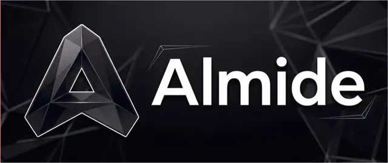

almide
A statically-typed language built so code survives LLM edits; compiles to native (via Rust) and WebAssembly
What it does
- Native and WebAssembly targets, byte-identical output
- Compiler diagnostics that spell out the fix
- Exhaustive match, effect fn, and fan concurrency